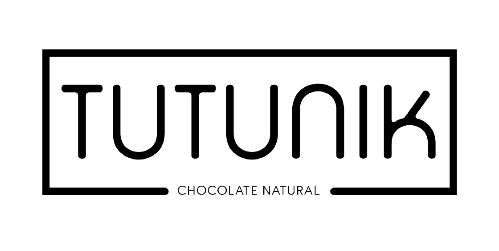
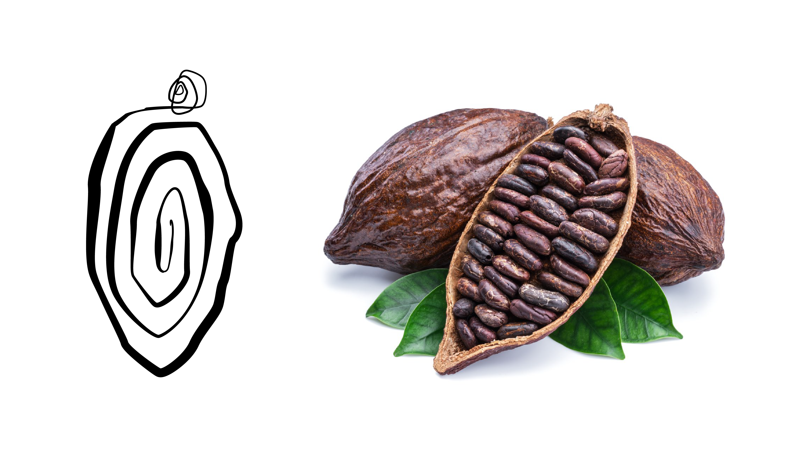
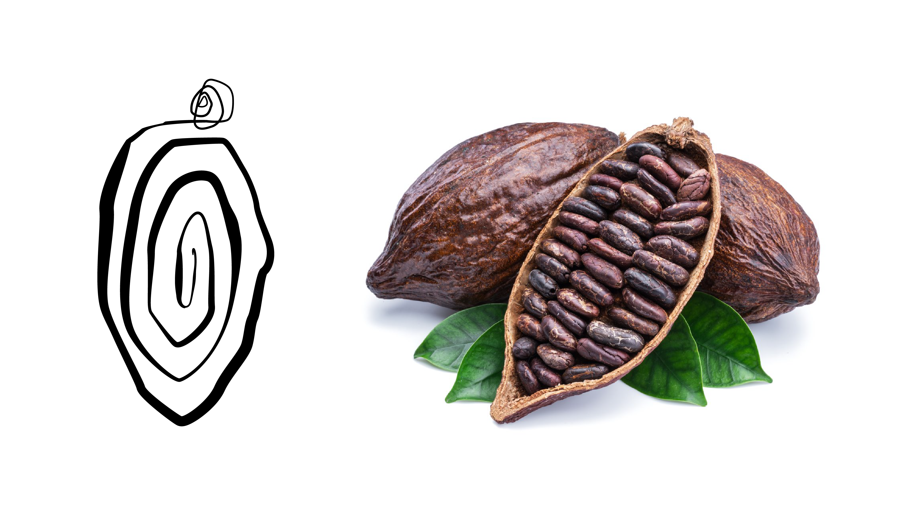
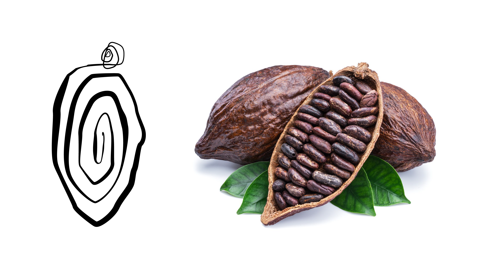
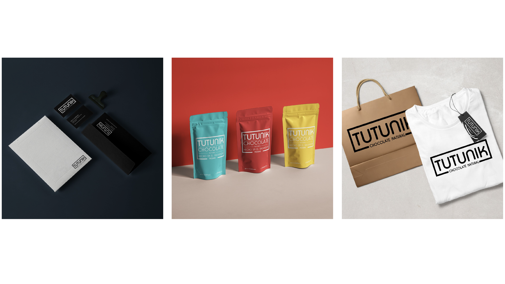
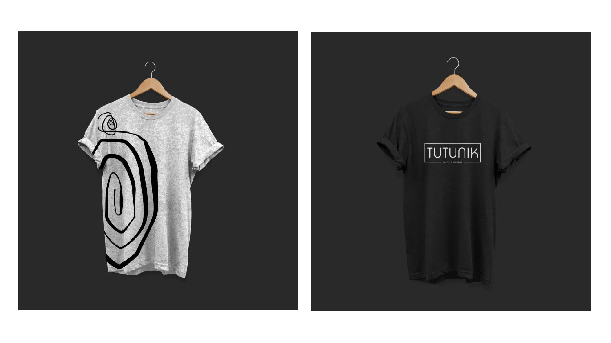
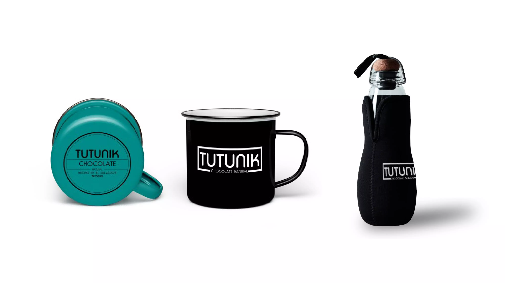
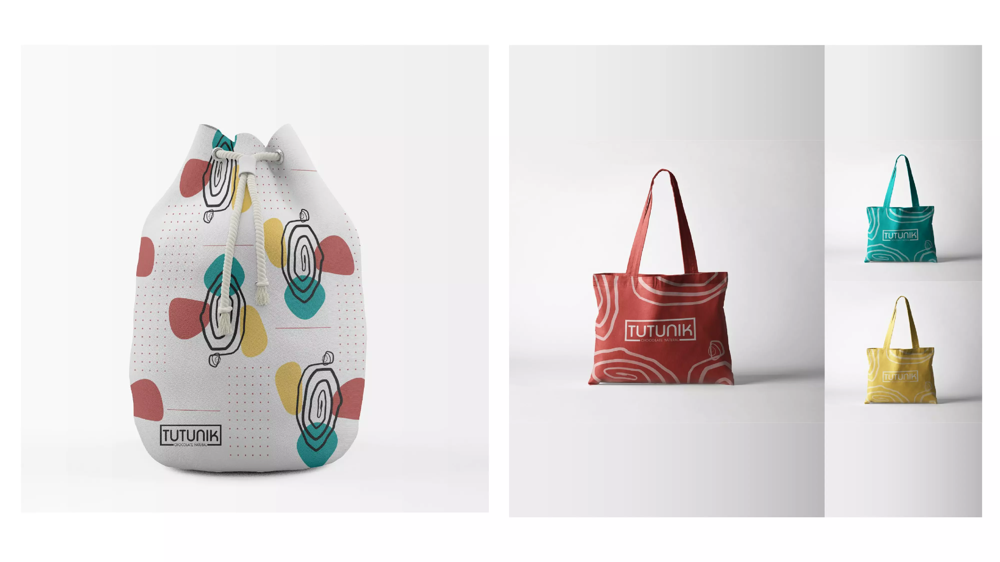
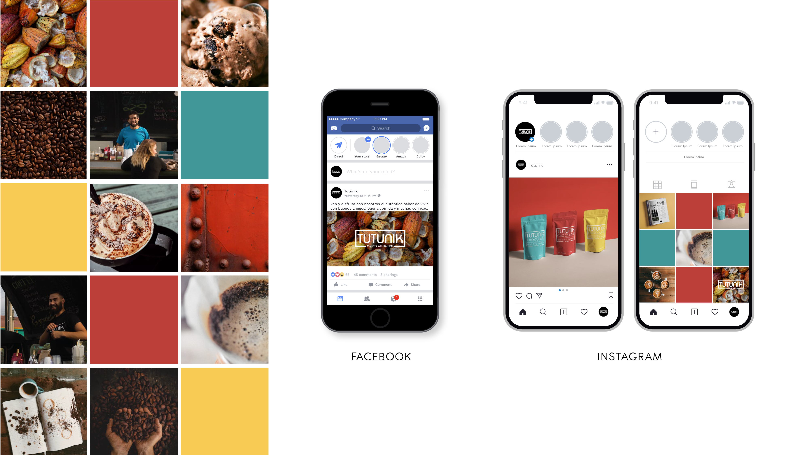

 

The objective of this project is to refresh the Tutunik brand, a brand specialized in cocoa products. By refreshing the brand, it seeks to improve its perception in the market and attract new consumers, maintaining its essence and values. A new graphic line will be developed that reflects the quality and delicious taste of Tutunik's products, conveying a modern and attractive image that connects emotionally with consumers and highlights the indulgent nature of its products.





